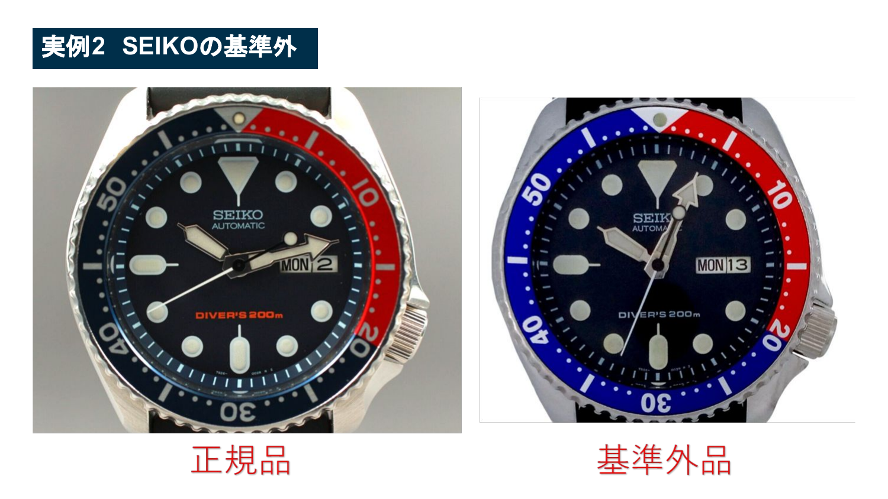
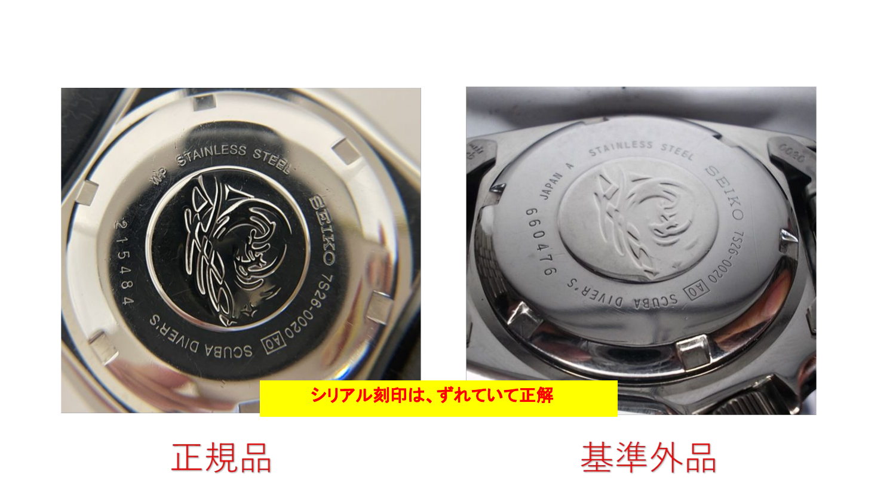
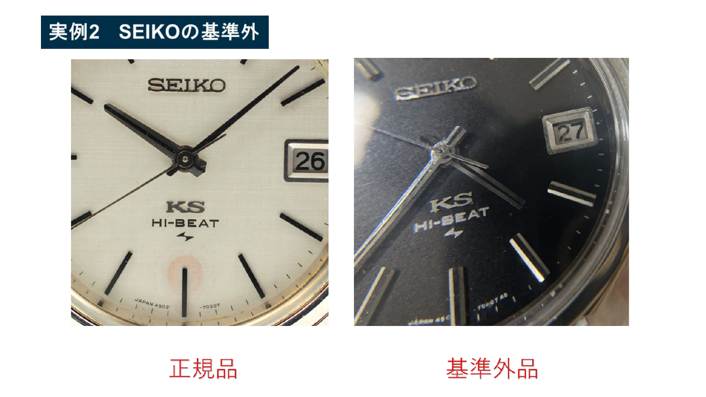

01 ロゴ
フォント、太さ、位置、印字のにじみを確認します。
時計ジャンルでは、真贋確認の精度がそのままリスク管理になります。写真で見るべきポイントを実例ベースで整理しました。
真贋は一箇所だけで断定せず、刻印、ロゴ、文字盤、ムーブメント、外装状態を合わせて見ます。写真の枚数が少ない商品は、質問して確認するか避ける判断をします。
素材PDFの実例ページを、確認しやすいように配置しています。



フォント、太さ、位置、印字のにじみを確認します。
裏蓋の型番、シリアル、ブランド刻印の位置と深さを確認します。
内部写真がある場合、形状や刻印が正規の仕様に合うかを見ます。
保証書、箱、説明書がある場合は型番・シリアルと整合するか確認。
真贋の見方を押さえたら、そもそも改造品・基準外品が多いモデルを先に知っておきます。